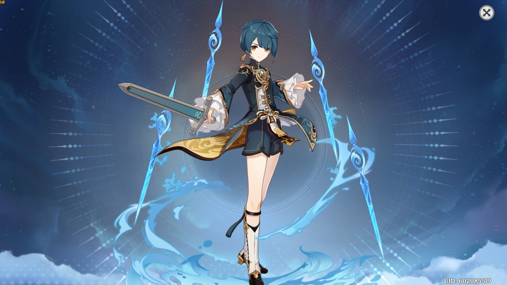

Arconte Electro:
Shogun Raiden
La arconte electro es una "DPS" o "supor" muy buena con un daño por rotacion estable es una de los mejores dps electro que hay.
Historia
Orígenes:
Arconte Electro: Raiden Shogun es la gobernante indiscutible de Inazuma, conocida como "Su Excelencia, la todopoderosa Narukami".Prometió a los habitantes de Inazuma la eternidad, lo que la convierte en una figura reverenciada y temida.
Historia: Su verdadero nombre es Raiden Ei, y su historia está marcada por la búsqueda de la eternidad y el equilibrio en Inazuma.
Ha visto el sacrificio que la región ha hecho a lo largo de los años para progresar y ha asumido el papel de mantener el orden y la estabilidad.
Personalidad:
Determinada y Solitaria: A pesar de su poder y autoridad, Raiden Ei es una persona solitaria que ha renunciado a su felicidad personal en busca de la eternidad para Inazuma.Su determinación es inquebrantable, y no duda en tomar decisiones difíciles para lograr sus objetivos.
Relación con el Poder: Su historia está marcada por la lucha contra la ambición y el deseo de poder, que considera una amenaza para la eternidad que busca proteger.
Habilidades en Combate:
Elemento Electro: Raiden Shogun utiliza una lanza y controla el elemento Electro. Sus habilidades están diseñadas para aumentar el daño de la habilidad definitiva del equipo y proporcionar energía elemental.Habilidad Elemental: Verdad Onírica.
Ráfaga Elemental: Mente Onírica.
Ataque en Picado: Contención del caos.
Mejor equipo:
- Bennett (Apoyo)
- Xingqiu (Apoyo) 
- Xiangling (DPS)

Clic en la imagen.
Clic en la imagen.